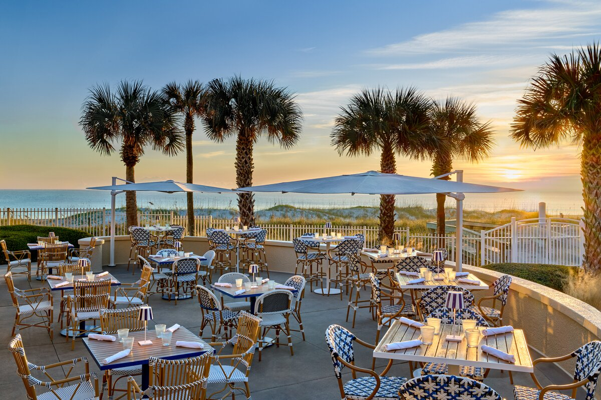
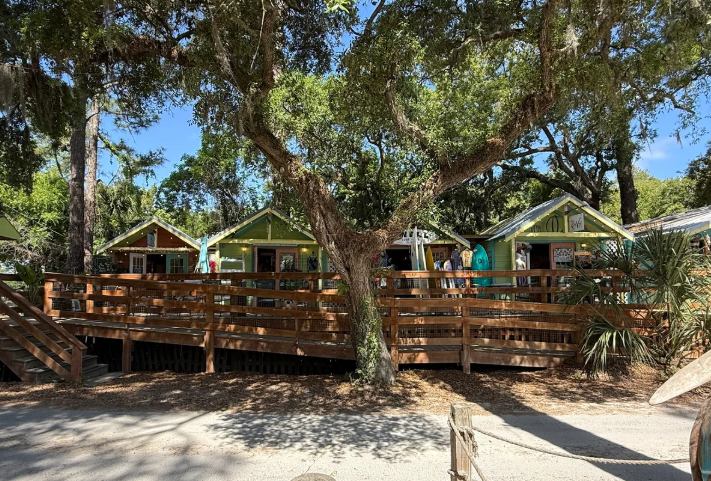

Dine & Shop in Taniti
Discover local flavors, unique shops, and everything Taniti has to offer.

Dine
Discover Taniti's diverse dining options, from local fish and rice dishes to American favorites and Pan-Asian cuisine. Enjoy a variety of flavors throughout your island adventure.
Dining
Shops
Find everyday essentials at Taniti's supermarkets, smaller grocery stores, and 24-hour convenience store. Whether you're stocking up for your stay or grabbing something on the go, Taniti has convenient shopping options.
Shopping